NEARA held the Spring 2026 NEARA Conference, including the Annual General Meeting, online via Zoom on May 2nd. The Zoom meeting was just a part of a series of exciting events happening across the northeast from April through June.
Read the Spring 2026 Program.


We had originally reserved Camp Wightman in North Stonington CT for the spring conference, but that reservation fell through, and we were not able to find an available venue for late April in both quality and price in that area. Hence the decision to hold the Annual General Meeting and have talks via Zoom. The big benefit was that you wouldn't incur any hotel room costs, nor would you be paying for the hotel meeting costs (hall and food).
But we really wanted people to get together, so we hosted get-togethers at a few locations, and field trips at various locations in the northeast over several weekends.
10:00 AM: Reports by the President, Treasurer, and some Committees.
10:30 AM: John DiMarco, A historiography of historic contact and rescue in New York
11:30 AM: Updates from Chapter Coordinators on latest research and upcoming events.
1:00 PM: Perry Donham, Methodology for field testing deliberate stone placement and alignments in Foxborough
2:00 PM: Mike Johnson, Predictive modeling and innovative sampling in early site discovery in Virginia
May 15-17: NEARA Weekend Site Visit to the "Ancient Ruins" of LeTerrain, Canada, located 5 hours NW from Burlington VT. Options include a day visit or overnight stays of one, two, or three nights.
Details are now available at LeTerrain Field Expedition Weekend.
A special page for direct booking the NEARA event is now open at LeTerrain's NEARA sign-up page.
Or contact Terry Deveau at Atlantic-Canada-coord@neara.org for more information.
There will be a New Jersey field trip to visit chambers/root cellars associated with barns in Warren County on May 16th.
The weather-delayed Taylortown Cairns field trip will be rescheduled soon.
Contact Nancy Hunt at NH-coord@neara.org.
Devon Toland led a field trip to sites around Henniker NH, including the famous footprints.
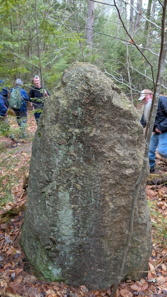
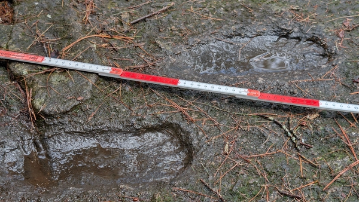
That was followed by a visit to the New Hampshire Historical Society Museum in Concord NH, where we got to see an odd stone "egg", a "painted" stone wall, a dugout canoe, and other artifacts.
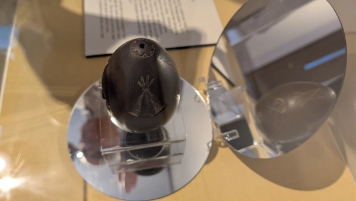
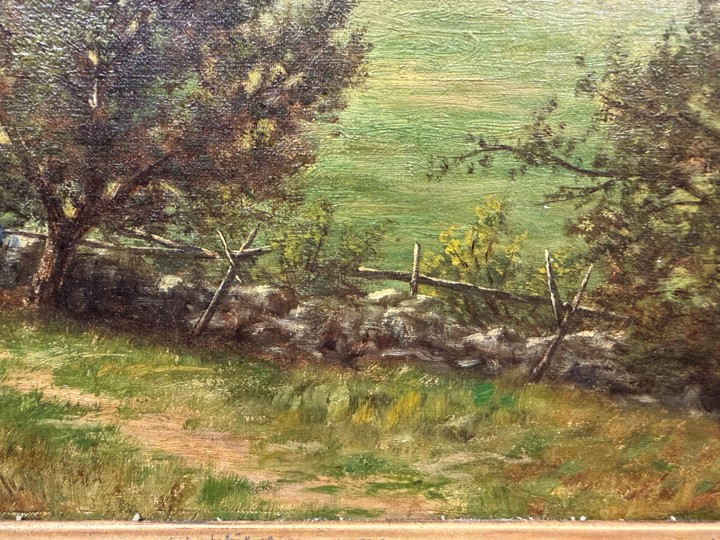
Kaia Sharon led a great field trip to Boynton Park and Cascades Conservation Area in Paxton and Worcester MA, which included the split boulder named Wunneompset and a Nipmuc amphitheater.
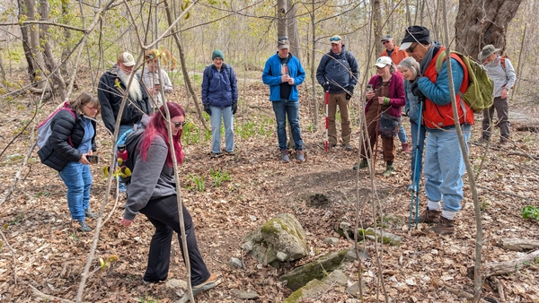
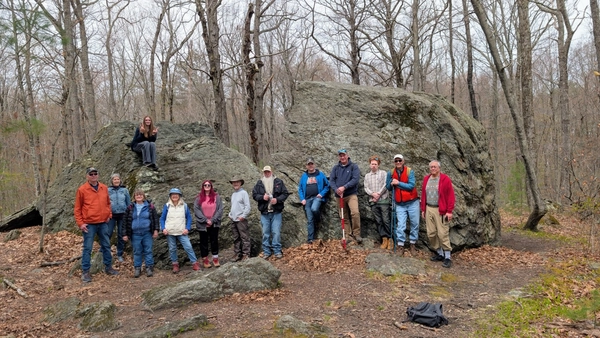
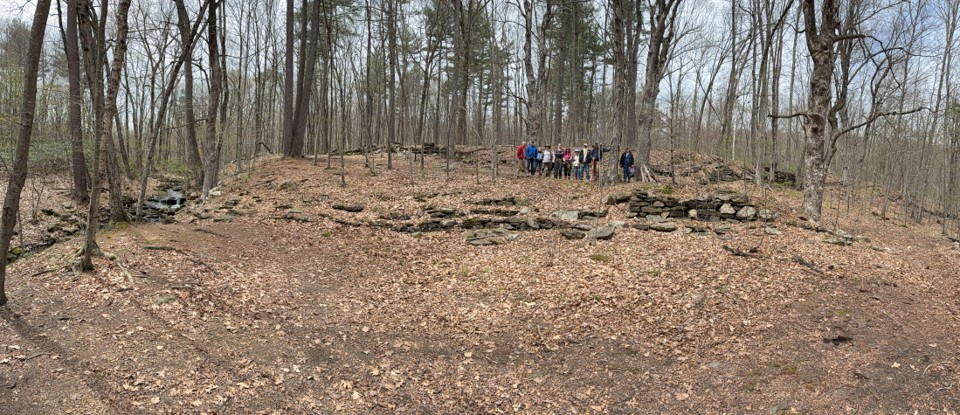
Then Peter Anick led a return to Upton Chamber in Upton MA, with commentary by Cathy Taylor about alignments with Pratt Hill.
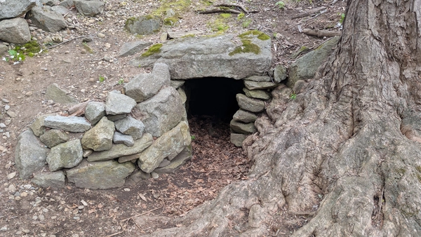
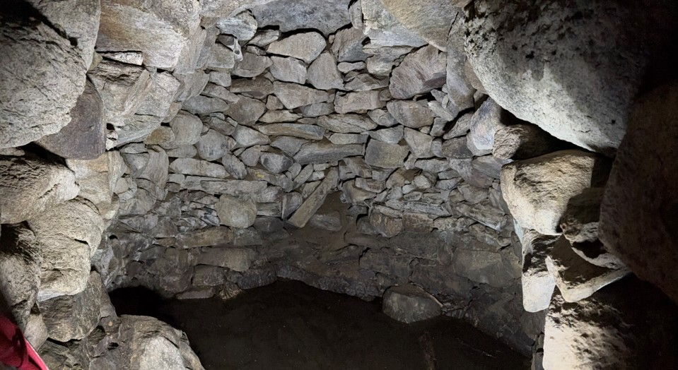
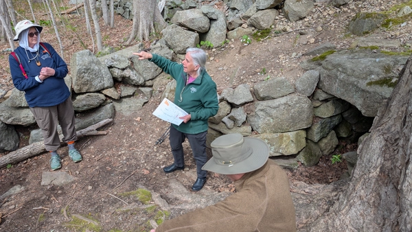
Fleur Fairman led a field trip to view stone chambers in Silver Lake Preserve in West Harrison NY.
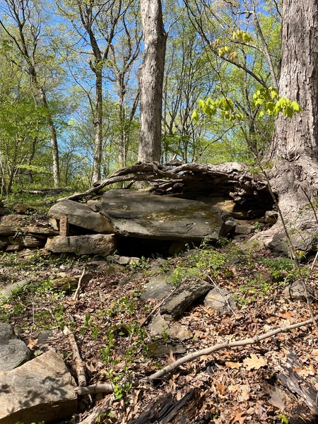
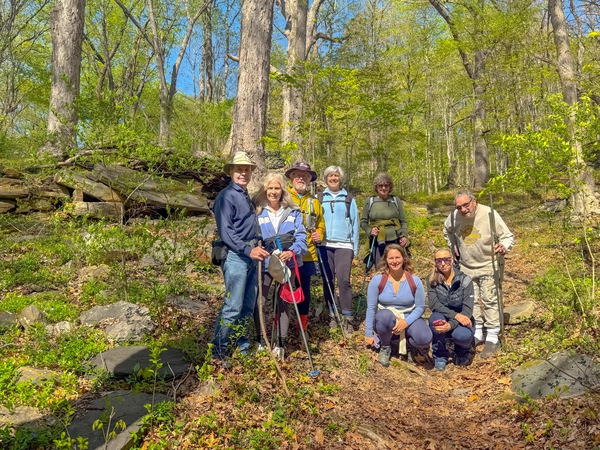
Jim Hammond led a pleasant and well-organized field trip to Lincoln Woods State Park in Lincoln RI.
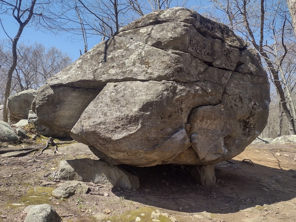
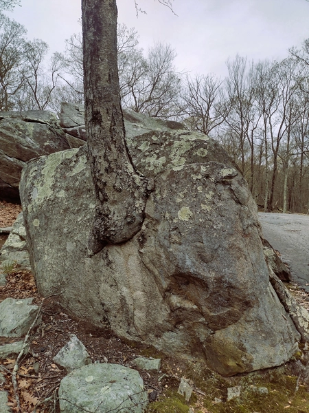
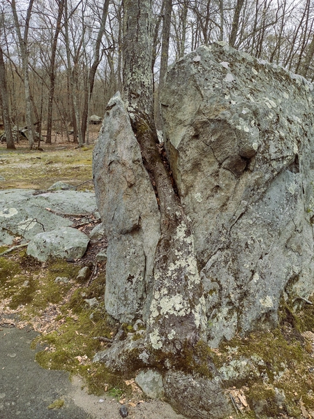
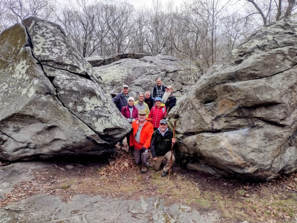
Join the conversation by being a member of the NEARA Forum, forum@neara.org. It's a great platform for sharing your thoughts and questions and connecting with NEARA members.
It takes a lot of work to assemble a good program for a conference. We would like it if all NEARA members would give us their suggestions for speakers who they would like to see. So we have created a form for you to fill out for each person you recommend: Suggest a Speaker